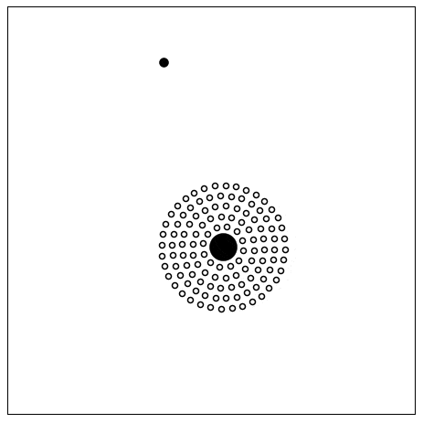

about me
I am a PhD candidate and National Science Foundation Graduate Research fellow (NSF-GRFP) in the department of physics and astronomy at the University of California Riverside. I work with Simeon Bird.
I am generally interested in the ways in which we can discover through models and simulations. My current work is in cosmology, specifically in using cosmological simulations along with observations to learn about the universe.
Below is a highly simplified galaxy interaction simulation I ran as an undergraduate (a harbinger of my current work?), based on Toomre & Toomre, APJ, 178, 623.
